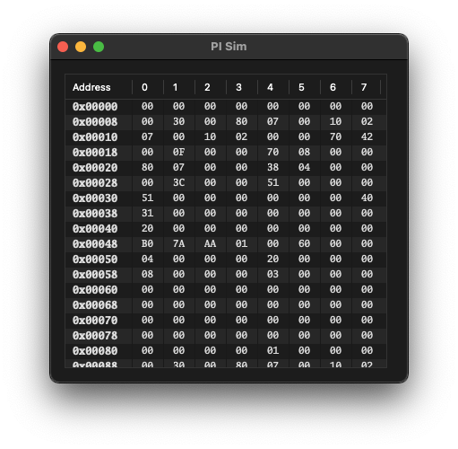
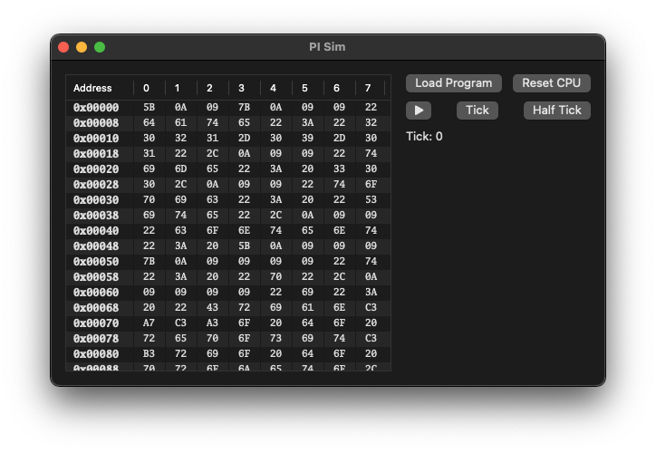

A arquitetura RISC-V é um ISA aberta lançada em 2010 que vem ganhando espaço em aplicações comerciais.
A proposta deste TCC é o desenvolvimento e verificação de um núcleo RISC-V RV32I que seja pequeno e com suporte as extensões A, C, Zicsr e Zifencei. O núcleo tem como alvo o seu uso em sistemas embarcados que possuam restrições de tamanho físico ou de custo. Será usado como base projetos como o SERV [1] e PicoRV32 [2] que oferecem núcleos pequenos, porém sem o suporte ao conjunto de extensões propostas. O suporte ao conjunto proposto permitirá o uso de instruções compactas (que reduz o tamanho dos programas para RISC-V em torno de 30%) bem como o suporte à execução privilegiada para rodar código de terceiros de forma segura.
Se espera no fim do trabalho a implementação da CPU em Verilog, síntese da mesma em uma FPGA (Xilinx Artix 7) e um conjunto de softwares que demonstrem o funcionamento do chip além da documentação de todo o projeto.
| Tarefa | Status | Mês | ||||||||||||
| jan | fev | mar | abr | mai | jun | jul | ago | set | out | nov | dez | |||
| Apreender Verilog | Completa | 1 | 1 | 2 | ||||||||||
| Adquirir a FPGA | Completa | 1 | 2 | |||||||||||
| Apreender a usar a FPGA | Completa | 1 | 1 | 2 | ||||||||||
| Estudo da arquitetura RISC-V | Completa | 1 | 1 | 1 | 1 | 1 | 2 | |||||||
| Preparar ambiente para desenvolvimento | Completa | 1 | 1 | 1 | 2 | |||||||||
| Desenvolvimento do núcleo | Em progresso | 1 | 1 | 3 | ||||||||||
| Validação e síntese do núcleo | Espera | 3 | 3 | |||||||||||
| Organização da documentação | Em progresso | 1 | 3 | |||||||||||
| Escrever monografia | Em progresso | 1 | 1 | 3 | ||||||||||
| Poster do TCC | Espera | 3 | ||||||||||||
| Apresentar TCC | Espera | 3 | ||||||||||||
| Atualização final | Espera | 3 | ||||||||||||
Legenda: [1] Em Progresso [2] Concluido [3] Planejado
2021-04-05 (30min) [pre]
Batepapo inicial com o Gold para definir o caminho do TCC. Dentre os pontos importantes da conversa podemos listar:
- Trabalhar com algo relacionado a RISC-V
- Explorar possíveis projetos já existentes
2021-04-06 (300min) [Verilog]
Estudo de Verilog com base no livro Verilog HDL do Samir Palnitkar. Parte dos estudos resultaram em um pequeno projeto com exemplos de integração entre Verilog, C e Objective-C. Link para o repositório.
2021-04-11 (240min) [pre]
Leitura do(s) livro(s) do Patterson e releitura da especificação do RISC-V. Curiosamente, o Patterson já está disponível numa edição que usa o RISC-V.
2021-04-27 (240min) [pre]
Escrita de um texto sobre os compromissos do RISC-V. Acesse aqui.
2021-05-10 (240min) [pre]
Estudo da especificação 0.10 da extensão de vetores do RISC-V,seu contexto em relação a outras extensões (ARM SVE e Intel AVX-512) e escrita de um breve texto sobre a mesma. Acesse aqui.
2021-05-14 (60min) [pre]
Ingresso do Carlos Eduardo como mentor no projeto.Ele é embaixador RISC-V no Brasil e seu conhecimento técnico no assunto é de grande valor.Realizamos uma conversa acerca do modelo de FPGA a ser comprado e fechamos na Artix 7 da Xilinx.Realizei a aquisicão da placa XC7A100T Wukong da QMTECH e um JTAG para realizar a programação.O equipamento deve chegar na metade de junho.
2021-05-15 (30min) [pre]
Desenvolvimento da proposta e definição de objetivos parciais.
2021-06-04 (120min) [FPGA]
Teste de configuração da FPGA Artix-7. Além da preparação do ambiente (criação de máquina virtual e instalação do Vivado), realizei os experimentos disponibilizados pelo fabricante da placa (repo aqui).
Obter a placa foi um processo relativemente tranquilo, exceto pelo fato de eu ter enviado um endereço inválido. Com isso, ao chegar no correios da minha cidade, o pacote é devolvido para a china 🤯. Felizmente dei sorte ao conseguir comprar uma segunda JTAG no Mercado Livre (a primeira está voltando pra china) e de recuperar o pacote com a FPGA em si. A lição do dia é: revise o endereço de entrega!
2021-06-05 (240min) [FPGA]
Finalização da configuração do ambiente de desenvolvimento e estudo das interfaces disponíveis na FPGA.
2021-09-01 (300min) [Site]
Crianção do repositório do projeto, design do novo layout do site e preparação do sistema de renderização dele.
O sistema basicamente consiste em um render de JSON para HTML extensível por módulos. Assim os log de trabalho podem ser registrados de um modo que permita gerar estatísticas e gerar uma página.
2021-09-02 (300min) [Site]
Trabalhei nos módulos necessários para renderizar o website. Isso inclui a renderização de tags, injeção de estilo, criação das seções, injeção de outros arquivos e listas.
2021-09-06 (400min) [Site, Core]
Desenvolvimento do módulo de cronograma e do módulo de log do site. Preparação de uma folha de estilos básica.
Design da seção de processamento de inteiros do núcleo.
2021-09-07 (480min) [Core]
Implementação dos módulos de banco de regitro, ALU e soft RAM incluindo alguns testes.
2021-09-08 (90min) [Monografia, Core]
Preparação do template da monografia e documentação inical da unidade de controle para a primeira iteração do core .
2021-09-12 (180min) [Arquitetura]
Releitura da especificação do RISC-V para reforço.
2021-09-15 (540min) [Simulador, Core]
Trabalhei na interface do simulador. Ele será usado para avaliar o comportamento do hardware de forma visual.
Como desenvolvo em um Mac estou usando a interface nativa e hoje implementei um visualizador para o estado da RAM:
Por fim trabalhei no core para que o módulo de soft RAM funcione a partir do C++ para depois ligar com o vetor em C da UI.
2021-09-16 (540min) [Simulador, Core]
A interface do simulador ganhou alguns botões, mas apenas Load Program funciona por enquanto.
Agora o usuário pode definir o conteúdo da ram a partir de qualquer arquivo. Também é possível editar manualmente os bytes da memória e copiar uma região selecionada.
Por fim trabalhei na interface C++/C/Obj-C entre a CU1 gerada pelo verilator e a aplicação Cocoa. Aproveitando para explicar um pouco como as coisas estão organizadas:
Os arquivos verilog ficam dentro da pasta stepV. Para um módulo 'X.v' é possível gerar 'testes unitários' a partir do arquivo 'X.unit.cpp' ou uma biblioteca a partir do arquivo 'X.cpp' e sua interface 'X.h'. Por exemplo, para a biblioteca do 'cu1.v' rodamos `$ make cu1.a` e para o 'teste uniário' do 'integer_alu.v' rodamos `$ make integer_alu.unit`.
2021-09-17 (300min) [Simulador, Core]
Implementei o código para fazer com que os outros botões da interface passassem a funcionar.
Alterei um pouco o makefile do stepV para gerar objetos que funcionem no Xcode. Vale notar que ainda é necessário linkar no projeto a biblioteca libc++.
Adicionei o suporte a observação do clock usando o método poke da API do `cu1`.
2021-09-21 (270min) [Core]
Trabalhei na implementação parcial do sistema de Fetch-Decode-Execute para suporte ao conjunto base RV32I.
2021-09-22 (600min) [Core, Simulador, Bra]
Implementei parte das instruções base (branch, alu, jump). Adicionei log do valor de registradores no simulador. Adicionei -i instruções no BRA.
2021-09-23 (600min) [Core, Simulador, Bra]
Implementei parte das instruções base (load, store). Preparei a toolchain de risc-v para compilar programas em C. Adicionei quase todas as instruções RV32I no BRA.
2021-09-24 (660min) [Core, Arquitetura]
Resolvi um bug na instrução jal. Avaliei qual será o método inical de interface do sistema e dentre as opções optei por utilizar comunicação UART pela simplicidade. Estudei a parte privilegiada da especificação do RISC-V para implemetar a parte de CSR.
2021-09-26 (300min) [Projeto]
Reorganizei a estrutura do projeto para trabalhar pelo Xcode. Continuei os estudos de arquitetura privilegiada. Comecei a estruturar versão final de testes.
2021-09-27 (300min) [Projeto]
Trabalhei no rework da unidade de controle para ter suporte a CSRs.
2021-09-28 (300min) [Projeto]
Trabalhei no sistema de testes integrado ao Xcode.
2021-09-29 (720min) [Core, Projeto]
Corrigi um bug no memory_fetch. Avancei o rework do control_unit que agora suport instruções dos opcodes LUI, AIUPC, OP e OP-IMM.
Agora o workflow ocorre marjoriariamente no Xcode, exceto pela programação em Verilog pois o editor não tem suport a hints nem a coloração da sintaxe.
Isso foi possível com a adição de tracing aos módulos compilados e a adição da classe UHRTestBench que permite executar a simulação a partir de uma série de transformações e constrains. Considere o snippet a seguir:
@8: @{ @"applyOnRise": @[ @(UHRControlUnitSignalMI_R), @1, @(UHRControlUnitSignalMI_D), @0xdeadbeef ] }, @9: @{ @"checkOnLow": @[ @(UHRControlUnitSignalINST), @0xdeadbeef, @(UHRControlUnitSignalSTATE), @(UHRControlUnitStateExecute) ] }, @10: @{ @"pass": @{} }A chave indica em qual clock que as regras devem ser aplicadas. As regras disponíveis são applyOnRise e applyOnFall para simular estímulos, checkOnLow e checkOnHigh para aplicar constrains e pass para encerrar a simulação. Se algum constrain falhar, uma falha é emitida para o sistema de testes e a simulação contínua até um pass ou chegar no limite de clocks pré definidos pelo usuário.
2021-09-30 (660min) [Core, Projeto]
Implentei o resto das instruções que estavam disponíveis na versão anterior do core e comecei a reestruturar o PI Sim para executar programas de teste.
2021-10-01 (480min) [Core, Simulador, Projeto]
Configurei a CI do Xcode para fazer com que os testes sejam executados a cada commit. Reorganizei a parte gráfica do simulador e sua integração com os módulos de simulação.
2021-10-04 (480min) [Monografia]
Comecei a escrever a introdução da monografia.
2021-10-05 (480min) [Monografia]
Continuei o trabalho na monografia, principalmente planejando e organizando seções da introdução e monografia.
2021-10-06 (150min) [Projeto]
Comecei a preparar o projeto para uma pequena reorganização necessária para mitigar bugs no core.
Check the circuit – Spock